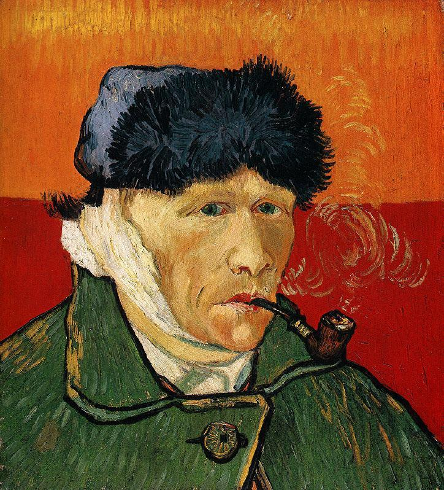

Находите места интереса на картине.
Осталось найти
Звездная ночь
Кипарисы своими очертаниями напоминают собор, выполненный в стиле «пламенеющей готики».
Во многих странах кипарисы считаются культовыми деревьями, символизируют жизнь души после смерти, вечность, бренность бытия и помогают усопшим найти кратчайший путь на небо. Здесь эти деревья выступают на первый план, именно они – главные герои картины. Такое построение отражает основной смысл произведения: страждущая человеческая душа (возможно, душа самого художника) принадлежит как небу, так и земле.
Картина делится на две горизонтальные плоскости: неба (верхняя часть) и земли (городской пейзаж внизу), интересно, что жизнь на небе выглядит более привлекательной, чем жизнь на земле. Это ощущение создается благодаря яркому колориту и уникальной для Ван Гога технике письма: посредством длинных, густых мазков и ритмичного чередования цветовых пятен он создает ощущение динамики, вращения, спонтанности, чем подчеркивает непостижимость и всеобъемлющую силу Космоса.
Небесные светила изображены сильно увеличенными, а спиралевидные вихри в небе стилизованы под образы галактики и Млечного Пути.
Эффект мерцания небесных светил создается за счет сочетания холодного белого цвета и различных оттенков желтого. Желтый цвет в христианской традиции ассоциировался с божественным светом, с просветлением, в то время как белый был символом перехода в иной мир.

До Ван Гога обычные пейзажи не обладали столь мощным голосом и появился этот голос совсем не сразу. Первые работы были мрачными. Винсент еще не владел цветом - своим истинным голосом. Начинающий художник воссоздавал гнетущую атмосферу психологической напряжённости. В это же время у художника сформировалось и собственное понимание пейзажа: выражение своего внутреннего восприятия природы через аналогию с человеком.
Одно столкновение с великим Рембрандтом изменило Винсента навсегда. Он увидел не просто красивую картинку, он увидел откровение. Воскрешение Лазаря полностью переменило жизнь Ван Гога. То что сделал Рембрандт на своем полотне - не делал еще никто.
Христос всегда говорил, что не обладает никакой властью, что все чудеса творятся верой и Богом, а не им самим. Именно эту идею отображает на своем полотне Рембрандт. Иисус поднимает руку, мертвый Лазарь поднимается из могилы, но Христос удивлен не меньше других: ему удалось то, во что он верил, но чего сам не ожидал, ему удалось победить смерть
Ван Гог создает свою вариацию на картину Рембрандта. Только вот теперь в роли Лазаря он сам, его воскресило искусство.
Родители хотели, чтобы их ребенок был идеален, однако сам Винсент к идеалу никогда не стремился. Он всегда выбирал свой собственный путь. Это был путь страдания, разочарования и познания.
Этот хмурый голландский парень был уникален во всем: поссориться со всей своей семьей потому что решил жить со старой проституткой и наставить ее на путь истинный? - Да не вопрос. Когда мастера живописи в Брюссели сказали Винсенту что у него нет таланта, остановило ли это его? - Нет. Он просто решил что нужно работать больше. Шутка ли, за неполные 10 лет творчества он создал больше 2000 картин
Винсент Ван Гог оказался на самом дне. Его поместили в психиатрическую лечебницу и на то были весьма весомые причины. Напасть на своего друга Поля Гогена во время ссоры с бритвой - это еще пол беды, но вот в порыве раскаяния отрезать себе мочку уха, а потом преподнести ее в подарок местной проститутке... Это уже печально.
Дойдя до самого дна, художник увидел свет. В его творчестве больше не было мрачных полотен.
Сеятель на фоне заката. У Ван Гога не ни малейшего намека на тяжесть - земля тут больше походит на воду, она движется подобно волнам, а сеятель как будто не идет, а скользит по жидкой поверхности, подобно Христу.
Он бросает в землю не просто зерна, это семена веры. На заднем плане яркое солнце, его лучи заполняет все небо и кажется сливается с всходящей пшеницей. Есть тут и вороны, убивающие семена, но их еще мало.
Однако эйфория длилась не долго. Он ругается со своим единственным другом, его братом. Психиатр советует работать больше и Ван Гог работает. Но в его картинах больше не радости
Cвою меланхолию Ван Гог пытался лечить работой - это не помогало. Художник давно хотел написать летящих ворон, вопрос был только один: как заставить их всех взмыть в небо одновременно? Ван Гог нашел решение, он купил револьвер и 20 июля 1890 года взял палитру, краски, стул, пистолет и отправился на пшеничное поле, чтобы написать одну из лучших своих работ
Ровно через неделю, на этом же поле, из этого же револьвера он выстрелил себе в сердце, но рука его дрогнула - пуля попала в живот. Ван Гог дошел до дома и мучался 2 дня, а перед смертью сказал своему любимому брату "Печаль будет длиться вечно"